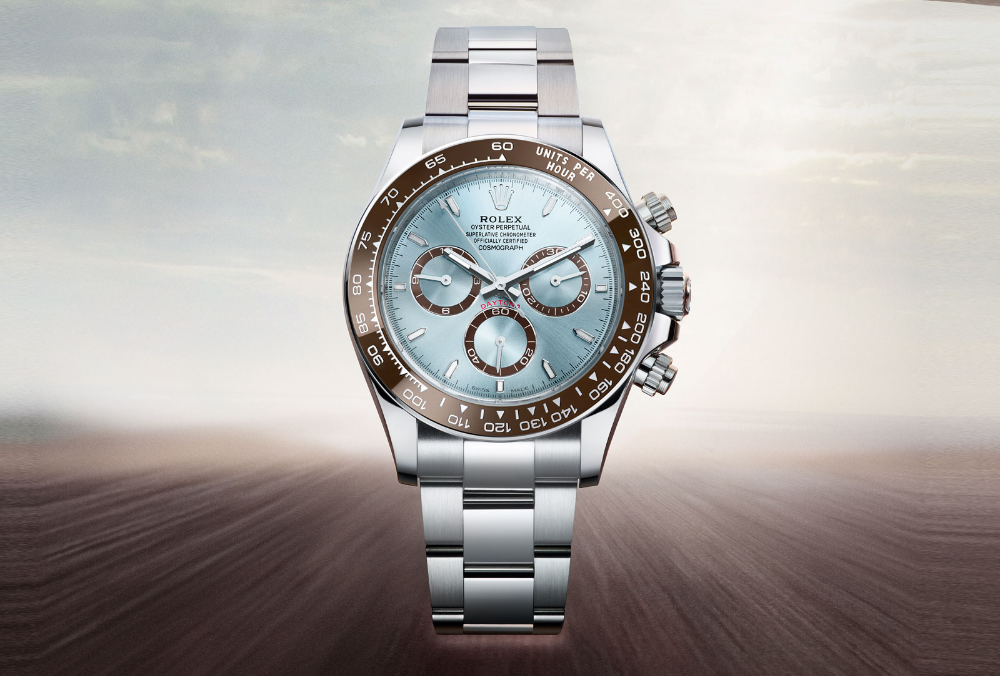

Daytona
De in 1963 gelanceerde Cosmograph Daytona is al sinds jaar en dag meer dan alleen een horloge: het is een icoon. Zijn naam, die onlosmakelijk verbonden is met het beroemde racecircuit, en zijn grafische wijzerplaat zijn legendarisch. Maar het hart van de legende klopt in het binnenste van deze bijzondere chronograaf: in het volledig door de Rolex-manufactuur ontworpen en geproduceerde uurwerk, dat onder alle omstandigheden ongeëvenaarde prestaties biedt. De Cosmograph Daytona is door de jaren heen voortdurend verder verbeterd en verfijnd, en heeft bewezen even betrouwbaar als nauwkeurig te zijn.

- Specificaties
- Prijs: $3.917
- Opwinden: Handopwind
- Bouwjaar: 1997
- Referentienummer: 3570.50.00
- Hoogte: 13.8mm
- Waterdicht:5 ATM
- Glas: Kuntstof
- Diameter: 42mm